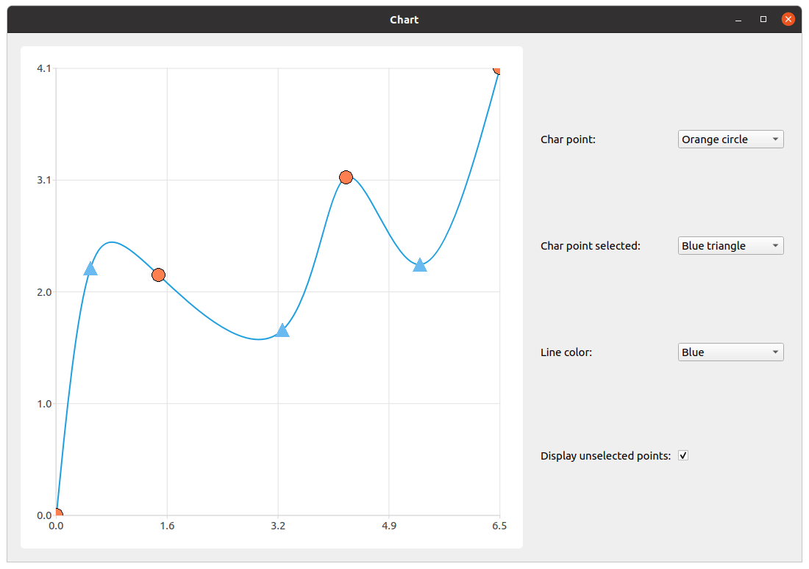
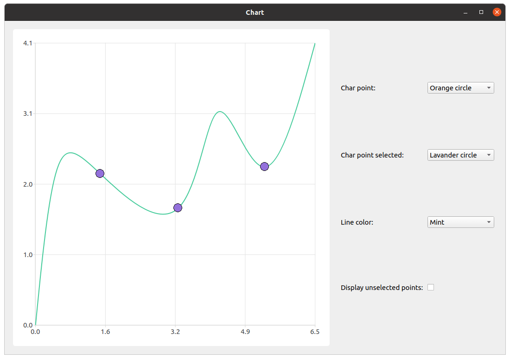

Using Light Markers and Points Selection
Note: This is part of the Charts with Widgets Gallery example.


We start with creating a series, filling it with the data, and setting up selection functionality. It's important not to set points visibility to true, because light markers functionality is an independent feature and setting both would result in undesired behavior.
constexpr qreal marker_size = 20.; auto series = new QSplineSeries; series->append({QPointF(0., 0.), QPointF(0.5, 2.27), QPointF(1.5, 2.2), QPointF(3.3, 1.7), QPointF(4.23, 3.1), QPointF(5.3, 2.3), QPointF(6.47, 4.1) }); series->setMarkerSize(marker_size); series->setLightMarker(rectangle(marker_size, Qt::red)); series->setSelectedLightMarker(blueTriangle(marker_size)); QObject::connect(series, &QXYSeries::clicked, series, [=](const QPointF &point) { int index = series->points().indexOf(point); if (index != -1) series->toggleSelection({index}); });
Then we create the QChart, the QChartview and the control widget with its layout to arrange customization elements.
auto chart = new QChart; chart->addSeries(series); chart->createDefaultAxes(); chart->legend()->setVisible(false); chart->layout()->setContentsMargins(0, 0, 0, 0); chart->setTitle("Select points with mouse click"); auto chartView = new QChartView(chart, this); chartView->setRenderHint(QPainter::Antialiasing); auto controlWidget = new QWidget(this); auto controlLayout = new QGridLayout(controlWidget);
The next step is creating elements of customization.
auto charPointCombobox = new QComboBox(controlWidget); auto charPointSelectedCombobox = new QComboBox(controlWidget); auto lineColorCombobox = new QComboBox(controlWidget); auto showUnselectedPointsCheckbox = new QCheckBox(controlWidget);
We create the label for the marker selection combobox and add fill the combobox with the items. Also, we provide functionality to the combobox. Considering the implementation of the light markers functionality, we need to make sure if displaying of unselected points is checked. Switching the visibility of the light marker off is achieved by setting it to "empty" QImage. If the user unchecks the displaying of unselected points and changes the light marker image, unselected points have to remain invisible. If checking isn't performed, new QImage will be set for light marker and unselected points will be visible even though it has been switched off.
auto charPoint = new QLabel(tr("Char point: "), controlWidget); charPointCombobox->addItems({tr("Red rectangle"), tr("Green triangle"), tr("Orange circle") }); QObject::connect(charPointCombobox, &QComboBox::currentIndexChanged, series, [=](const int index) { if (showUnselectedPointsCheckbox->isChecked()) series->setLightMarker(getPointRepresentation(PointType(index), marker_size)); });
Almost the same procedure applies to the selected point light marker and line color. The only difference is that there's no need to check visibility of unselected points as it doesn't affect the functionality.
auto charPointSelected = new QLabel(tr("Char point selected: "), controlWidget); charPointSelectedCombobox->addItems({tr("Blue triangle"), tr("Yellow rectangle"), tr("Lavender circle") }); QObject::connect(charPointSelectedCombobox, &QComboBox::currentIndexChanged, series, [=](const int index) { series->setSelectedLightMarker(getSelectedPointRepresentation(SelectedPointType(index), marker_size)); }); auto lineColorLabel = new QLabel(tr("Line color: "), controlWidget); lineColorCombobox->addItems({tr("Blue"), tr("Black"), tr("Mint") }); QObject::connect(lineColorCombobox, &QComboBox::currentIndexChanged, series, [=](const int index) { series->setColor(makeLineColor(LineColor(index))); });
A small difference comes with changing visibility of unselected points. As it was mentioned before, making light markers invisible is achieved by setting them to "empty" QImage. That is why, depending on checkbox state, selected point light marker is set to "empty" QImage or to the light marker extracted from the current index of the corresponding combobox.
auto showUnselectedPointsLabel = new QLabel(tr("Display unselected points: "), controlWidget); showUnselectedPointsCheckbox->setChecked(true); QObject::connect(showUnselectedPointsCheckbox, &QCheckBox::stateChanged, series, [=](const int state) { if (state) series->setLightMarker(getPointRepresentation(PointType(charPointCombobox->currentIndex()), marker_size)); else series->setLightMarker(QImage()); });
The final part is to arrange the elements, add all the widgets to the main widget, and set the main window size.
controlLayout->addWidget(charPoint, 0, 0); controlLayout->addWidget(charPointCombobox, 0, 1); controlLayout->addWidget(charPointSelected, 1, 0); controlLayout->addWidget(charPointSelectedCombobox, 1, 1); controlLayout->addWidget(lineColorLabel, 2, 0); controlLayout->addWidget(lineColorCombobox, 2, 1); controlLayout->addWidget(showUnselectedPointsLabel, 3, 0); controlLayout->addWidget(showUnselectedPointsCheckbox, 3, 1, 1, 2); m_mainWidget = new QWidget(this); auto mainLayout = new QHBoxLayout(m_mainWidget); mainLayout->addWidget(chartView); mainLayout->addWidget(controlWidget);